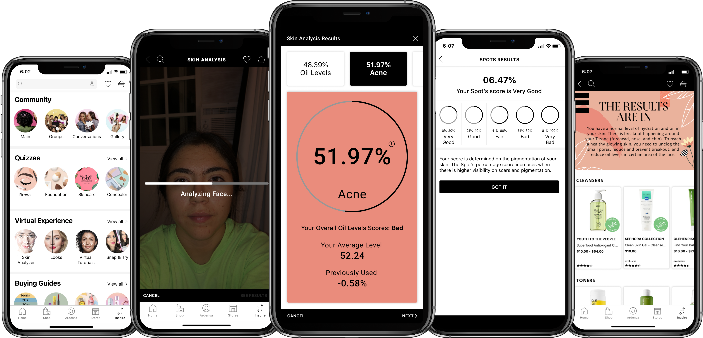
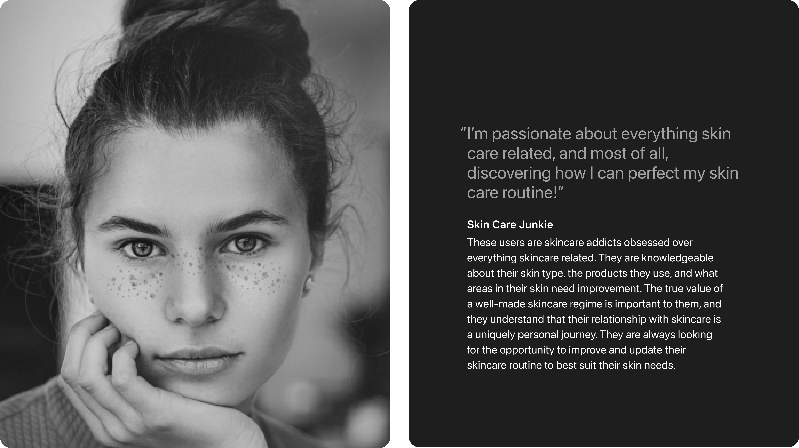
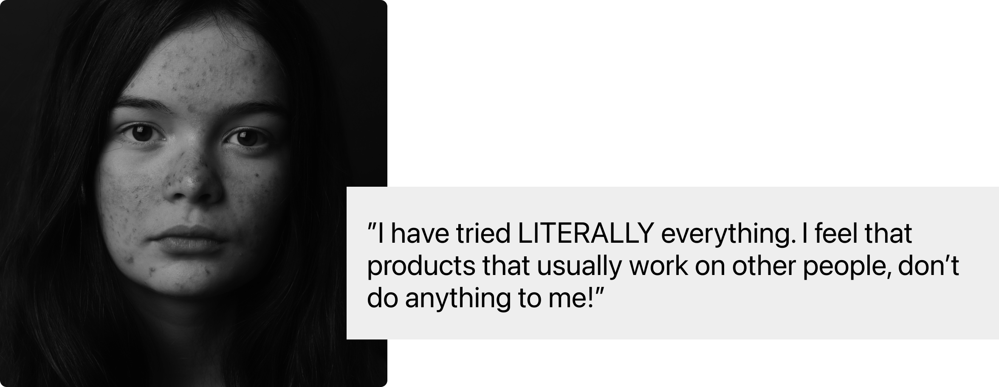
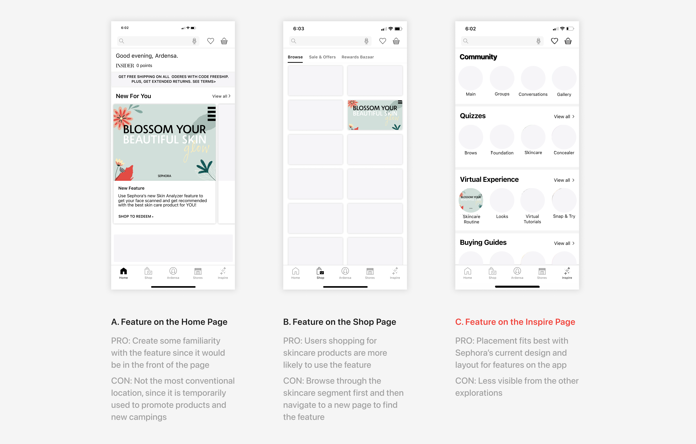
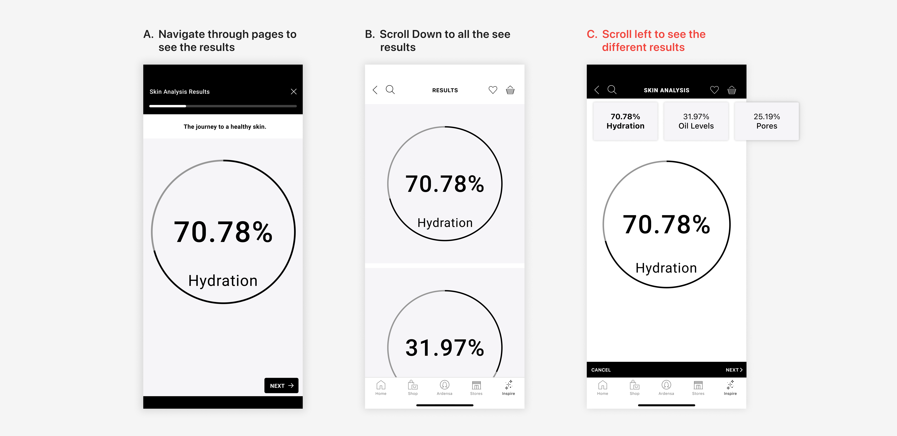
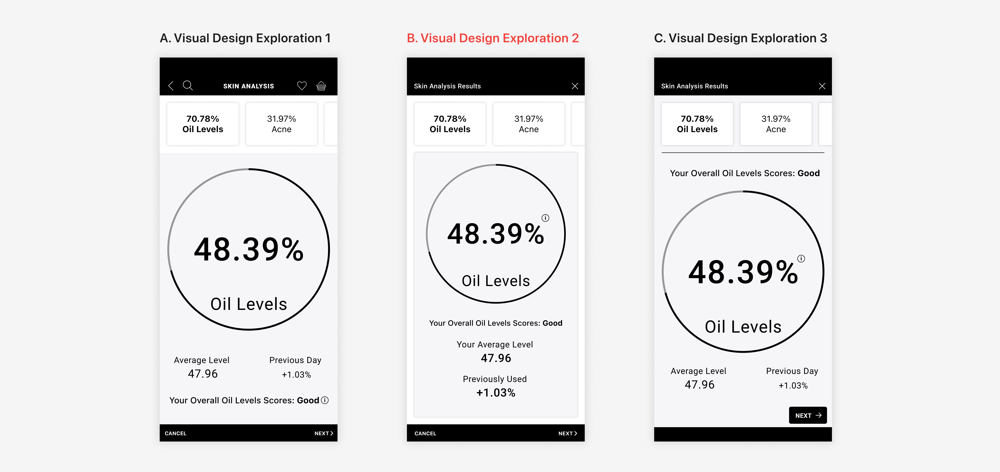

Sephora
Blossom Your Skin Glow

Overview
A personalized skin care routine feature on Sephora's mobile application to promote the company's and its partners' skin care products.
Role
Product Designer
Timeline
Feruary 2020 - May 2020
Team
2 Designers
A Glow on the Blind Spot
“THAT’S IT! I’ve had enough! If this doesn’t work, nothing will.” How many times has that been the mantra playing in your head?
You’ve tried the products, watched YouTube videos, read articles and reviews, yet you’re still not satisfied with how your skin looks.
These products and methods are seemingly working for everyone else, why not you? And it only leaves you wondering if it is your skin?
Am I using the right products? Maybe I’m using too much or too little of a particular treatment.
What once seemed like a simple face wash is now a multi-step skincare process that is unique to its users with different steps and products.
Sephora's mobile app today allows users to find skincare products by having buying guides based on skincare ingredients and age or taking skincare quizzes based on skin concerns or products.
However, unless users are talking face-to-face with a professional to help guide them, taking a questionnaire about their skin requires a certain degree of beauty know-how.
People want to personalize the perfect skincare routine to achieve healthy and fresh skin, but they can not do these well because:
- They lack skin care knowledge
- There's a wide range of skincare products with different functions
- They don't know what type of help their skin needs
To better understand skincare users' needs and key pain points with creating an effective skincare routine, I dove into interviews with other skin care users.
Learning About Skin Care
My objective was to recognize the key pain points associated with consumers creating their skincare regime. Based on my objective, I want to identify three things:
- What users routinely do to narrow down to specific skincare products
- How users understand what issues their skin is undergoing
- What steps do users have in their skin care routine
User Research


Know Your Skincare Concerns
Users want to develop a proper skin care routine, but the process can be overwhelming and difficult for many. Many users know about the different types of skincare products and their purpose. The real problem is that users didn’t know their specific skin concerns and their common behavior mistakes when maintaining their skin. This blind spot in a lot of consumers’ knowledge and habits has had a measurable impact on the overall wellbeing of their skin--often with poor, little, or no results. It is common for users to mischaracterize their skin and not give any thought to it. Users know they want their skin to look better.
To dig deeper into users' skin concerns and find a way to perfect their skincare routine, I grabbed some sticky notes and decided to brainstorm.
Exlore a New Serum
To motivate the brainstorm session, I rephrased the people problem as two open-ended questions:
- How might we incentivize users to follow fewer behavioral mistakes in their skincare regime
- How might we help users find and understand their skin concerns
When evaluating the potential solutions, I reminded myself of the one keyword in the people problem:
Personalize
The approach to skincare is not one-size-fits-all by any means, so it makes sense that the idea of customized skincare is resonating with a lot of users.
For users selecting products for their skincare routine is an individual experience that many drained off. There’s a range of factors that need to be taken into consideration when creating a skincare routine: User’s skin type, tones, texture, concerns, and goals. One user makes look for a facial moisturizer to help stave off fine lines, while another needs to use one that boots hydrations. Great skincare is about users using the right products for their skin.
Every user must be using the ideal products made precisely to their skin needs. The effective solution should focus on narrowing product choices that fit best for each users’ skin needs.
Market Research--How other retail brands help users to find skin care products

- Ulta shows users the purpose of each skincare step and shows who should use each product
- Neutrogena scans its user's face and provides scores on dark circles, dark spots, fine lines, smoothness, and wrinkles
- Beauty Bay sorts out all of their skincare products by the different types of products
- La Roche-Posay allows users to shop by the different types of skin: oily, dry, sensitive, and other types
Choosing a Skincare Product
Skin Analyzer. In this feature, users' faces would get scanned and analyzed to get results on different aspects of their skin. Based on their results, users would get product recommendations to help them reach healthier skin, and they would get suggestions for each skincare step as well.
Feasibility: High/Medium
Sephora is familiar with Artificial Intelligence since it is used on some of their mobile application features. It has a ‘Virtual Artist’ feature that allows its users to virtually play around with the different make-up products they have to offer. Because of this, it would be feasible for Sephora to create another feature with Artificial Intelligence to scan users' skin and determine their skin concerns.
Impact: High
The problem with the current skincare quiz feature is that a lot of users don’t know their skin concerns or skin type. This makes it difficult for users to accurately find the right and necessary product for their skin. The skin analyzer feature would be impactful because users would get results on their skin and recommended products that fit their skin needs.
After the comprehensive evaluation, I decided to go with the Skin Analyzer feature:
- It combines the best of both worlds--impact and feasibility
- It naturally carries the helpful and advanced service of Sephora
Creating a Skincare Routine
Initial Design
It was important to find the right balance of visibility and usability. The entry point had to be visible to the users while not interfering with other purposes of the app. After navigating through the app, I decided to test the entry point from the Home, Shop, and Inspire Screen.

After some critiques and feedback, I decided to go with exploration C. Not only is the feature in the Inspire page consistent with the app’s current app, but users can easily navigate to it on the page. In my user testing, I recognized that users went directly to the Inspire page to find all the features on the Sephora app. It became clear that users understood the layout and flow of the app.
Results Page
Going back to the people problem, I wanted to make sure that the Result page was insightful enough to help users understand their skin concerns without overwhelming them. With that in mind, I explored different layouts to see which one best displayed the results.

During my user testing, I realized that it was important for users to navigate through the results effortlessly. I had neglected to consider a balance between the arrangement of the stats and user usability. That being said, I pursued iteration C because users felt it the was easiest to navigate through, and it had enough space to display information.
Although design C had the right amount of screen to show the result while being user-friendly, it was visually inconsistent with the app. Visually, the page did not feel appropriate with the overall design of the app. Also, in my original designs for the Result screen, I hadn’t thought of what type of results were going to be displayed.
Sephora’s skincare quizzes have a long list of skin concerns. To simplify and help users understand their skin concerns better, I decided not to use all of them. Instead, I chose more general facial features to show the user’s overall skin condition that overlapped skin concerns:
- Oil Levels
- Acne
- Pores
- Texture
- Pigmentation

I decided to go with design B. Users indicated that the size of the circle in iterations A and C was too big and did not balance as well with the size of the font like in design B. Additionally, everything in the center is more visually appealing.
Visual Design
I created a UI Kit as a comprehensive resource to allow me to maintain consistency and streamline my design process for all my exploration. With the assortment of the kit, I was able to dive deeper into the visual treatment of my high-fidelity prototype. Additionally, the UI Kit helped me plan my campaign and designed the prototype's structure properly.

Final User Flow
Initial Page. In this view, users are going to be able to access the Skin Analyzer feature through the ‘Inspire” page. Originally, Sephora had a subcategory on that page called ‘Virtual Artist.’ Because the Skin Analyzer is an AI feature, I placed it under there and changed the name of the subcategory to ‘Virtual Experiences.’
Skin Analysis. On the Skin Analysis page, users place their faces on the screen and get their face scans. On this screen, the users have to wait as well as the app to analyze and get their results.
Results. Users are going to get a percentage out of 100% to determine their levels on different facial features: Oil levels, Acne, Pores, Texture, and Pigmentation. The overall level of the score is going to be displayed to show if it is bad or good. Additionally, if users use the feature previously, they are going to see their average percentage and if it is the difference between the last time they used it.
Recommendations. Based on their results, the feature would formalize an entire skincare routine with different products in each step to best-fit users’ preferences and price points. Depending on their score, users would get on average 3-5 product recommendations per step.
Final Flow from Initial Point to Face Scanning
The final flow allows users to use the Skin Analyzer feature from the Inspire page. From there, users have to press start. Their face gets scanned, and then it gets analyzed.
Final Flow from Results to Recommendations
The final flow allows users to see their results after their face gets scanned. Additionally, if the user doesn’t understand the score, they get details about it. Lastly, the user would have product recommendations.
I created a prototype to showcase my interactions with the flow and how users could realistically use the app.
We Belong To Something Beautiful
This solution holds the Belong Campaign Manifesto at its core and takes design inspiration from Sephora’s branding. It is important to remind consumers of their beauty through a healthy, glowing skin journey that allows them to blossom like a flower. It embodies the fearlessness of unrestricted self-confidence and inspires consumers to be their most natural selves.
.png)
.png)